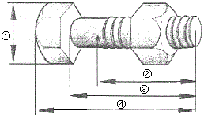
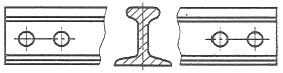
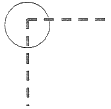
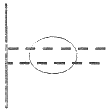
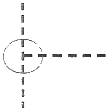
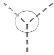
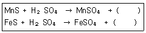
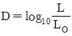
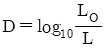
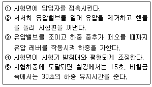

금속재료시험기능사 (2012-10-20 기출문제)
1과목: 금속재료일반
1. 탄소강을 약 0.8% 함유한 강은?
- 공석강
- 아공석강
- 과공석강
- 공정주철
(정답률: 81%)

2. 다음 중 실루민의 주성분으로 옳은 것은?
- Al-Si
- Sn-Cu
- Ni-Mn
- Mg-Ag
(정답률: 94%)
3. 금속에 같은 극이 생겨 서로 반발하는 반자성체 금속이 아닌 것은?
- Bi
- Sb
- Mn
- Au
(정답률: 44%)
4. 탄소강은 210~360℃ 부근에서 인장강도는 높아지나 연신율이 갑자기 감소하여 메짐(취성)을 가지게 되는 현상은?
- 저온 메짐
- 고온 메짐
- 적열 메짐
- 청열 메짐
(정답률: 63%)
5. 주기율표상에 나타난 금속 원소 중 용융 온도가 가장 높은 원소와 가장 낮은 원소로 올바르게 짝지어진 것은?
- 철(Fe)과 납(Pb)
- 구리(Cu)와 아연(Zn)
- 텅스텐(W)과 이리듐(Ir)
- 텅스텐(W)과 수은(Hg)
(정답률: 80%)
6. Al에 1~1.5%의 Mn을 합금한 내식성 알루미늄 합금으로 가공성, 용접성이 우수하여 저장 탱크, 기름 탱크 등에 사용되는 것은?
- 알민
- 알드리
- 알클래드
- 하리드로날륨
(정답률: 69%)
7. 1~5μm 정도의 비금속 입자가 금속이나 합금의 기지중에 분산되어 있는 복합재료로 서멧(cermet)이라고도 불리는 것은?
- 클래드 금속 복합 재료
- 입자 강화 금속 복합 재료
- 분산 강화 금속 복합 재료
- 섬유 강화 금속 복합 재료
(정답률: 60%)
8. 18-8 스테인리스강에서 나타나는 특유의 부식현상이 아닌 것은?
- 공식부식(Pitting Corrosion)
- 응력부식(Stress Corrosion)
- 선택부식(Preferential Corrosion)
- 입계부식(Intergranular Corrosion)
(정답률: 57%)
9. Cu에 5~20% 정도의 Zn을 함유한 황동으로 강도는 낮으나 전연성이 좋고 색깔이 금과 비슷하여 모조금 등으로 사용되는 합금은?
- 톰백(tombc)
- 문쯔메탈(muntz metal)
- 네이벌 황동(naval brass)
- 알루미늄 황동(aluminum brass)
(정답률: 78%)
10. 수용액에서 전착시킨 것으로 공업적으로 탄소 함유량이 가장 적은 철은?
- 전해철
- 해면철
- 암코철
- 카보닐철
(정답률: 76%)
11. 주철 중에 함유되어 있는 탄소의 형태가 아닌 것은?
- 흑연
- 공석탄소
- 유리탄소
- 화합탄소
(정답률: 43%)
12. 청동의 기계적 성질 중 경도는 구리에 주석이 몇 % 함유 되었을 때 가장 높게 나타나는가?
- 10%
- 20%
- 30%
- 50%
(정답률: 73%)
13. 금속의 이온화 경향에 대한 설명으로 틀린 것은?
- 금속이 전자를 잃기 쉬운 경향의 순서이다.
- 이온화 경향이 큰 순서는 K＞Ca＞Na＞Al이다.
- 이온화 경향이 작을수록 귀한(noble) 금속 즉, 귀금속이라 한다.
- 이온화 경향의 순서와 전기 음성도의 순서는 서로 반대되는 순서를 지닌다.
(정답률: 69%)
14. 다음 중 초초두랄루민(ESD)의 조성으로 옳은 것은?
- Al-Si 계
- Al-Mn 계
- Al-Cu-Si 계
- Al-Zn-Mg 계
(정답률: 69%)
15. 원표점거리가 60mm이고, 시험편이 파괴되기 직전의 표점거리가 50mm일 때 연신율은?
- 5%
- 10%
- 15%
- 20%
(정답률: 55%)
16. 가공방법의 기호 중 연삭 가공의 기호로 옳은 것은?
- G
- M
- L
- F
(정답률: 72%)
17. 반복도형의 기준을 잡을 때 1점 쇄선으로 그려야 하는 선은?
- 피치선
- 가상선
- 수준면선
- 무게 중심선
(정답률: 59%)
18. 유각볼트와 너트의 그림에서 볼트의 길이는?

- ①
- ②
- ③
- ④
(정답률: 72%)
19. 실제 길이가 50mm인 물체를 척도가 1:2인 도면에서 그리는 선의 길이와 치수선 위에 기입하는 숫자를 옳게 나타낸 것은?
- 25mm, 25
- 25mm, 50
- 50mm, 50
- 50mm, 100
(정답률: 70%)
20. 항상 죔새가 생기는 경우의 설명으로 옳은 것은?
- 축의 최소 허용 치수가 구멍의 최대 허용 치수보다 큰 경우
- 구멍의 최소 허용 치수가 축의 최대 허용 치수보다 큰 경우
- 실제 치수가 기준 치수보다 큰 경우
- 축 지름이 구멍의 지름과 같은 경우
(정답률: 57%)
2과목: 금속제도
21. 다음과 같이 물체의 형상을 쉽게 이해라기 위해 도시한 단면도는?

- 반 단면도
- 부분 단면도
- 회전 단면도
- 조합에 의한 단면도
(정답률: 70%)
22. 투상선이 투상면에 대하여 수직으로 투상되며, 물체의 모양과 크기를 가장 정확하게 나타낼 수 있는 투상법은?
- 정투상법
- 사투상법
- 등각투상법
- 부등각투상법
(정답률: 71%)
23. 도면을 사용 목적에 따라 분류한 것이 아닌 것은?
- 제작도
- 주문도
- 견적도
- 조립도
(정답률: 41%)
24. 다음 중 선의 접속 방법이 틀린 것은?




(정답률: 60%)
25. 다음 중 도면에서 치수 수치 앞에 사용하여 치수의 의미를 정확하게 나타내는 기호가 아닌 것은?
- ø
- □
- ⊥
- R
(정답률: 69%)
26. 다음 정 투상법에 대한 설명으로 틀린 것은?
- 제 3각법은 물체를 제 3면각 안에 놓고 투상하는 방법으로 눈→투상면→물체의 순서로 놓는다.
- 제 1각법은 물체를 제 1각 안에 놓고 투상하는 방법으로 눈→물체→투상면의 순서로 놓는다.
- 전개도법에는 평행선법, 삼각형법, 방사선법을 이용한 전개도법의 세 가지가 있다.
- 한 도면에는 제 1각법과 제 3각법을 같이 사용해서 그려야 한다.
(정답률: 72%)
27. KS D 3503 SS330에서 330이 의미하는 것은?
- KS 분류번호
- 재질을 나타내는 기호
- 제품의 형상별 종류나 용도
- 재료의 최저인장강도
(정답률: 78%)
28. 황화물 공정 특유의 조직으로 나타나는 황화물계 비금속 개재물의 분류로 옳은 것은?
- A형 개재물
- B형 개재물
- C형 개재물
- D형 개재물
(정답률: 47%)
29. 다음 중 고온 금속현미경으로 관찰할 수 없는 것은?
- 성분 조성과 합금의 변화
- 금속 용해와 응고 현상
- 소성 변형과 파단 현상
- 결정입자의 성장과 상의 변화
(정답률: 50%)
30. 피로시험을 할 때 시험편의 저항력이 축 방향으로 인장과 압축 응력이 교대로 생기는 시험은?
- 반복 인장 압축 시험
- 왕복 반복 굽힘 시험
- 회전 반복 굽힘 시험
- 반복 비틀림 시험
(정답률: 57%)
31. X선을 사용하여 결정면이나 원자배열을 결정할 때 사용되는 브레그(Bragg)식은? (단, n=회절 상수, λ=X선 파장, d=평행면간 거리, θ=입사각이다.)
- nλ=2dsinθ
- nλ=dcosθ
- nλ=2dtanθ
- nλ=dsinθ
(정답률: 56%)
32. 불꽃시험용 연삭기를 사용하여 강재를 판별할 때 반드시 지켜야 할 안전사항으로 틀린 것은?
- 보호안경을 반드시 써야 한다.
- 불꽃 시험은 숫돌의 정면에 서서한다.
- 숫돌을 교환했을 때는 3분 정도 시운전을 한다.
- 연마 도중 시험편을 놓치지 않도록 주의한다.
(정답률: 81%)
33. 다음 중 압축시험에 관한 설명으로 틀린 것은?
- 금속재료와 콘크리트는 각재 시험편만이 사용된다.
- 압축강도를 측정할 경우 단주형 시험편이 사용된다.
- 탄성계수를 측정할 경우 장주형 시험편이 사용된다.
- 취성이 있는 시험편의 길이(L)와 직경(d)의 관계는 L=(1.5~2.0)d 이다.
(정답률: 46%)
34. 쌍정(twin)에 대한 설명으로 틀린 것은?
- 쌍정면을 경계로 하여 결정부위가 변화한다.
- 쌍정에 의한 변형은 슬립에 의한 변형보다 매우 크다.
- 쌍정은 결정의 변형 부분과 변형되지 않은 부분이 대칭을 이루게 된다.
- 쌍정은 원자가 어느 결정면의 특정한 방향으로 정해진 거리만큼 이동하여 이루어진다.
(정답률: 60%)
35. 대물렌즈의 배율이 M40이고, 접안렌즈의 배율이 WP10일 때 현미경의 총 배율은?
- 100배
- 200배
- 400배
- 800배
(정답률: 71%)
36. 자분 탐상법을 실시하기에 가장 좋은 금속끼리 짝지어진 것은?
- Au, Ag, Cu
- Zn, Ti, Mg
- Fe, Al, Cu
- Fe, Ni, Co
(정답률: 59%)
37. 크리프 시험에 대한 설명 중 틀린 것은?
- 크리프 시험기는 가열로, 온도측정, 조정장치 등으로 구분된다.
- 어떤 시간 후에 크리프가 정지하는 최대응력을 크리프한도라 한다.
- 어떤 재료에 크리프가 생기는 요인은 온도와 하중과 시간이다.
- 철강 및 경합금 등은 250℃ 이하의 온도에서 크리프 현상이 나타난다.
(정답률: 60%)
38. 철강의 조직별 경도의 크기를 옳게 나열한 것은?
- 베이나이트＜오스테나이트＜페라이트＜마텐자이트
- 페라이트＜베이나이트＜오스테나이트＜마텐자이트
- 오스테나이트＜페라이트＜베이나이트＜마텐자이트
- 페라이트＜오스테나이트＜베이나이트＜마텐자이트
(정답률: 54%)
39. 다음 중 경도를 측정하는 방법에 해당되지 않는 것은?
- 압입
- 반발
- 긁힘
- 인장
(정답률: 43%)
40. 비커스 경도시험에 대한 설명 중 틀린 것은?
- 비커즈 경도시험의 표시기호는 HV를 사용한다.
- 하중의 대소가 있더라도 그 값이 변하지 않기 때문에 정확한 결과를 얻는다.
- 디지털이 아닌 경우 대각선의 길이는 시험기에 부착되어 있는 현미경으로 측정한다.
- 얇은 제품, 표면경화재료, 용접부분의 경도 측정에는 사용할 수 없다.
(정답률: 52%)
3과목: 금속재료조직 및 비파괴시험
41. 수세식 형광 침투액을 사용하여 건식 현상법으로 침투탐상시험을 할 때의 시험 순서로 옳은 것은?
- 침투처리→전처리→현상처리→세척처리→건조처리→관찰→후처리
- 전처리→침투처리→세척처리→건조처리→현상처리→관찰→후처리
- 침투처리→세척처리→후처리→현상처리→건조처리→관찰→전처리
- 전처리→현상처리→건조처리→침투처리→세척처리→관찰→후처리
(정답률: 64%)
42. 설처 프린트 시험의 편석 분류가 아닌 것은?
- 정편석
- 횡편석
- 중심부편석
- 역편석
(정답률: 52%)
43. 자기탐상시험법에 대한 설명으로 틀린 것은?
- 표면 균열을 검사하는데 적합한 방법이다.
- 결함 모양이 표면에 직접 나타나므로 육안으로 관찰 가능하다.
- 모든 금속에 적용할 수 있으므로 적용 범위가 넓다.
- 작업이 신속하고 간단하므로 자동화가 가능하고 검사 비용이 비교적 저렴하다.
(정답률: 74%)
44. 방사선이 물질에 투과할 때 물질의 원자핵 주위의 궤도전자와 부딪혀 상호작용을 한다. 이 상호 작용의 종류가 아닌 것은?
- 방사선 붕괴
- 광전 효과
- 콤프턴 효과
- 전자쌍 생성
(정답률: 43%)
45. 설퍼 프린트 시험은 황 편석도를 검사하는데 유용하게 이용하는 것으로 [보기]는 반응식을 나타낸 것이다. ()안에 공통으로 들어갈 화학식으로 옳은 것은?

- MnS
- N2S
- H2S
- O2S
(정답률: 75%)
46. 금(Au), 백금(Pt) 등과 같은 귀금속의 부식제로 왕수를 사용한다. 왕수의 주요 성분으로 옳은 것은?
- 진한 질산 10mL, 진한 염산 10mL, 글리세린 10mL
- 염화제이철 5g, 진한 염산 50mL, 물 100mL
- 질산 5mL, 물 100mL
- 피크르산 5g, 알코올 100mL
(정답률: 39%)
47. 다음 중 초음파탐상시험 방법이 아닌 것은?
- 공진법
- 투과법
- 침적법
- 펄스반사법
(정답률: 61%)
48. 하중을 증가시켜 일정 한도에 도달하면 하중을 제거하여도 원상태로 회복하지 못하고 영구변형이 남는 순간의 하중을 무엇이라 하는가?
- 응고점
- 변태점
- 항복점
- 녹는점
(정답률: 75%)
49. 충격 시험시 유의해야 할 안전 사항으로 틀린 것은?
- 브레이크장치의 이상 유무를 확인한다.
- 시험편의 홈이 중앙에 위치하였는지를 확인한다.
- 시험기의 설치 상태가 수평을 이루고 있는지를 확인한다.
- 전기장치에 부하가 걸리도록 하며, 해머의 정면에서 시험한다.
(정답률: 79%)
50. 강괴의 기포 또는 핀 홀(pin hole)이 완전히 압착되지 않고 그 흔적이 남아 있는 상태를 나타내는 매크로 조직의 기호는?
- B
- T
- P
- H
(정답률: 39%)
51. 강의 페라이트 결정입도시험에서 FGC는 어떤 시험방법인가?
- 파괴법
- 절단법
- 비교법
- 평적법
(정답률: 42%)
52. 방사선투과시험법에서 투과농도(D)를 구하는 식은? (단, L0:입사광의 강도, L:투과광의 강도이다.)


- D=log10(L+LO)
- D=log10(L-LO)
(정답률: 50%)
53. 로크웰경도시험에 쓰이는 원뿔 압입자의 꼭지각은 몇 도인가?
- 95°
- 100°
- 120°
- 136°
(정답률: 54%)
54. 로크웰 경도 시험기의 검증과 교정에서 전체 힘 F에 대한 허용차는 몇 %인가?
- ±1.0
- ±1.5
- ±2.0
- ±2.5
(정답률: 35%)
55. 충격시험에 대한 설명 중 틀린 것은?
- 인성이나 취성을 시험한다.
- 시험기로는 샤르피 충격시험기가 있다.
- 충격시험편에는 U형 또는 V 노치가 있다.
- 샤르피 충격값은 충격에너지를 헤머의 무게로 나눈 값이다.
(정답률: 58%)
56. 현미경조직 검사시 시험편 마운팅 작업 방법이 아닌 것은?
- 물림쇠에 의한 방법
- 합성수지를 이용하는 방법
- 열처리에 의한 방법
- 저용융점 합금을 이용하는 방법
(정답률: 50%)
57. 다음 중 재료시험 규격이 옳게 연결된 것은?
- 일본-BS
- 미국-JIS
- 영국-DIN
- 국제표준화기구-ISO
(정답률: 79%)
58. 비철금속에 대한 비파괴검사 방법 중 열 영향 부위에 발생한 표면 균열을 검사하기에 가장 적절한 검사방법은?
- 침투탐상검사
- 방사선투과검사
- 초음파탐상검사
- 수침음파탐상검사
(정답률: 60%)
59. 보기에서 브리넬 경도(Brinell hardness) 시험 방법에 대한 순서로 옳은 것은?

- ④→①→③→⑤→②
- ④→②→①→⑤→③
- ④→③→②→⑤→①
- ④→⑤→③→①→②
(정답률: 69%)
60. 재료의 소성가공성 및 용접부의 변형 등을 평가하기 위한 시험은?
- 굽힘시험
- 충격시험
- 경도시험
- 인장시험
(정답률: 53%)